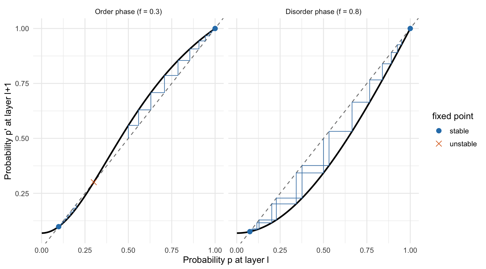
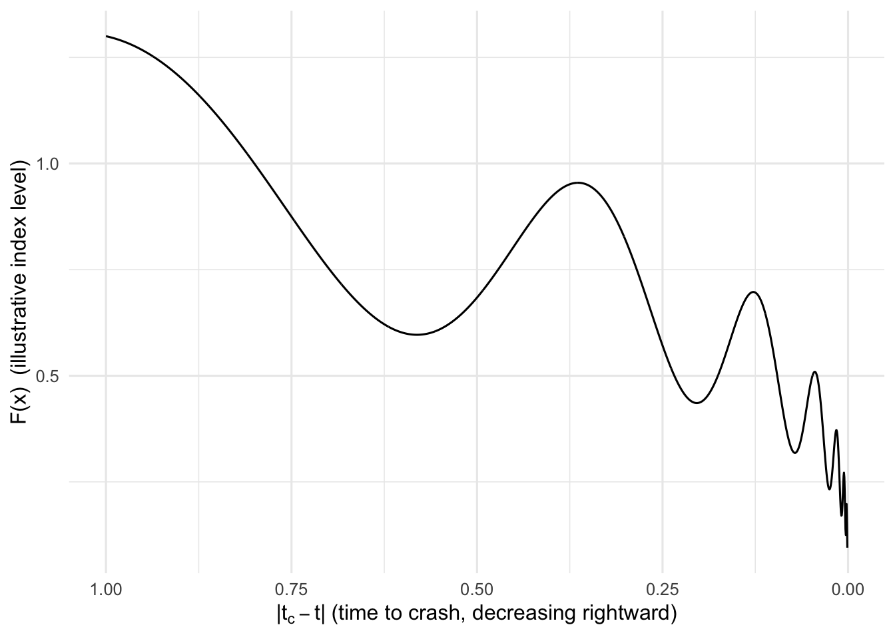

Fixed Points, Phase Transitions, and Diffusion Models
A functional-equation bridge between renormalization-group critical phenomena and the hierarchical structure of denoising diffusion
Implementing in R the two central bifurcation maps that connect Kadanoff block-spin renormalization group theory to belief propagation in hierarchical diffusion models.
diffusion
deep-learning
statistical-mechanics
renormalization-group
reproduction
Author
Paul Milne
Published
September 6, 2026
Note
This post’s comparative framing was originally drafted by an AI research assistant under my general direction, synthesizing my own 2022 dissertation and Sclocchi et al. (2024). The mathematics has been independently re-derived and computed in R below, rather than simply reproduced from that draft.
Two pieces of work on this blog turn out to share more mathematics than their subject headings suggest. My 2022 dissertation(Milne 2022) uses the renormalization group (RG) to describe critical phenomena in thermodynamics and financial markets. An earlier post reproduces Sclocchi, Favero & Wyart’s (2024) result (Sclocchi, Favero, and Wyart 2024) that denoising diffusion models undergo a sharp, hierarchy-dependent phase transition. Both are, underneath, the same story: a discrete iterated map, a critical parameter, and an unstable fixed point that separates two very different fates for the system.
This post makes that bridge concrete rather than just asserting it — implementing both maps in R, finding their fixed points numerically, and plotting the resulting cobweb diagrams side by side.
Two hierarchies, one structure
Both frameworks simplify a high-dimensional system into a multi-scale tree. In statistical mechanics, a 2D spin lattice is grouped recursively into blocks, each decimated down to a single block-spin variable — Kadanoff’s original coarse-graining move. In Sclocchi et al.’s Random Hierarchy Model (RHM), the same tree runs the other way: a class label at the root branches down through latent features to the pixels at the leaves. The parameters line up directly:
In both, one parameter controls order versus disorder: \(K\) above a critical value \(K_c\) gives spontaneous magnetic alignment; \(f < 1\) in the RHM gives structured, hierarchically-correlated data rather than unstructured noise.
The RG side: Kadanoff decimation and the critical coupling
For the Potts model on a hierarchical diamond lattice, decimating spin sites under a scale transformation gives an exact recurrence for the coupling strength \(K\):
The physical critical point — where the correlation length diverges — is the unstable fixed point of this map, \(K_c = \phi(K_c)\). I’ll use \(Q=3\) (a three-state Potts model): it avoids a singularity in the denominator that shows up at \(Q=2\), and it happens to give a clean, exact critical point.
Figure 1: Kadanoff-Potts RG recursion (Q = 3). The unstable critical coupling sits at K_c = 4; trajectories starting on either side flow away from it toward one of two very different fates.
Solving numerically: \(K_c = 4\), with derivative \(\phi'(K_c) \approx 1.778\) — greater than 1, confirming it’s unstable. A trajectory starting just below \(K_c\) (green line, \(K_0=3.9\)) flows down; one starting just above (orange, \(K_0=4.1\)) flows up and diverges.
One correction to the source material is worth flagging here. The original synthesis described the disordered basin as flowing toward \(K \to 0\). Checking the map directly: \(\phi(0, 3) = 4\), not \(0\) — so \(K=0\) isn’t a fixed point of this recursion at all. The actual trivial fixed point, true for every\(Q\), is \(K=1\): \(\phi(1, Q) \equiv 1\) identically, since numerator and denominator both reduce to \(Q\). It’s also superstable (\(\phi'(1) = 0\)), which is why the “K0 = 3.9” trajectory above collapses onto it so fast.
The diffusion side: belief propagation and the class transition
Sclocchi et al. solve the optimal denoising dynamics for the RHM with belief propagation, tracking the probability \(p\) of correctly reconstructing a feature at layer \(\ell\):
\(p^*=1\) (perfect reconstruction) and \(p^*=1/v\) (chance level) are the two trivial regimes. Whether \(p^*=1\) is attractive or repulsive depends on the product \(sf\) through \(F'(1) \approx sf\) — and that’s the whole ballgame: below the threshold, denoising can recover the class; above it, it can’t.
F_bp <-function(p, s, f, m, v) { c_ <- (m -1) / (m * v -1) (p^s + f * c_ * (1- p^s)) / (p^s + f * (1- p^s))}s <-2m <-3v <-10phases <-data.frame(phase =c("Order phase (f = 0.3)", "Disorder phase (f = 0.8)"),f =c(0.3, 0.8))find_fp <-function(f) { g <-function(p) F_bp(p, s, f, m, v) - p grid <-seq(1e-4, 1-1e-6, length.out =4000) vals <-vapply(grid, g, numeric(1)) idx <-which(diff(sign(vals)) !=0) roots <-if (length(idx) >0) {vapply(idx, function(i) uniroot(g, grid[i:(i +1)])$root, numeric(1)) } else {numeric(0) }sort(unique(round(c(roots, 1), 6)))}stability_of <-function(p, f) { hh <-1e-6 d <- (F_bp(min(p + hh, 1-1e-9), s, f, m, v) -F_bp(max(p - hh, 1e-9), s, f, m, v)) / (2* hh)ifelse(d >1, "unstable", "stable")}p_grid <-seq(0.001, 1, length.out =400)curve_df <-bind_rows(lapply(seq_len(nrow(phases)), function(i) {data.frame(p = p_grid, Fp =F_bp(p_grid, s, phases$f[i], m, v),phase = phases$phase[i] )}))fp_df <-bind_rows(lapply(seq_len(nrow(phases)), function(i) { roots <-find_fp(phases$f[i])data.frame(p = roots, stability =sapply(roots, stability_of, f = phases$f[i]),phase = phases$phase[i] )}))cobweb_df <-bind_rows(cobweb_path(F_bp, 0.20, s = s, f =0.3, m = m, v = v) |>mutate(traj ="p0 = 0.20", phase = phases$phase[1]),cobweb_path(F_bp, 0.50, s = s, f =0.3, m = m, v = v) |>mutate(traj ="p0 = 0.50", phase = phases$phase[1]),cobweb_path(F_bp, 0.95, s = s, f =0.8, m = m, v = v) |>mutate(traj ="p0 = 0.95", phase = phases$phase[2]),cobweb_path(F_bp, 0.50, s = s, f =0.8, m = m, v = v) |>mutate(traj ="p0 = 0.50", phase = phases$phase[2]))curve_df <- curve_df |>mutate(phase =factor(phase, levels = phases$phase))fp_df <- fp_df |>mutate(phase =factor(phase, levels = phases$phase))cobweb_df <- cobweb_df |>mutate(phase =factor(phase, levels = phases$phase))ggplot() +geom_abline(slope =1, intercept =0, linetype ="dashed", colour ="grey50") +geom_line(data = curve_df, aes(p, Fp), linewidth =1) +geom_path(data = cobweb_df, aes(x, y, group = traj), colour ="steelblue", linewidth =0.4) +geom_point(data = fp_df, aes(p, p, shape = stability, colour = stability), size =3) +scale_shape_manual(values =c(stable =16, unstable =4)) +scale_colour_manual(values =c(stable ="#2C7FB8", unstable ="#D95F02")) +facet_wrap(~phase) +labs(x ="Probability p at layer l", y ="Probability p' at layer l+1", colour ="fixed point", shape ="fixed point")

Figure 2: Belief-propagation map F(p). Order phase: an unstable fixed point separates two stable attractors – a sharp phase transition in noise space. Disorder phase: the noiseless state itself becomes unstable, and every trajectory decays to the noise floor.
With \(s=2\), \(m=3\), \(v=10\): the order phase (\(f=0.3\)) has fixed points at \(p \approx 0.098\) (stable), \(p_c \approx 0.301\) (unstable), and \(p=1\) (stable) — a genuine bifurcation. Push \(f\) up to \(0.8\) and \(p=1\) flips to unstable, leaving only the noise floor at \(p \approx 0.076\): every trajectory, however close to perfect reconstruction it starts, decays away.
Two honesty notes. First, \(p=1/v=0.1\) isn’t an exact algebraic root of \(F\) for arbitrary parameters — I checked this numerically rather than assuming it, and it only holds exactly for special relationships between \(m\), \(v\), \(s\), \(f\). The stable floor above (\(\approx 0.098\) / \(\approx 0.076\)) sits close to \(1/v\) but isn’t pinned to it. Second, \(F'(1) \approx sf\) is itself an approximation: the exact derivative carries a prefactor \(\frac{m(v-1)}{mv-1}\), which here is \(0.931\) — so the true values are \(0.559\) and \(1.49\) rather than exactly \(0.6\) and \(1.6\). Both still land on the correct side of \(1\), which is all the theory actually needs.
\(s\), \(m\), and \(v\) here were chosen to land close to the illustrative numbers in the original comparison, not pulled from Sclocchi et al.’s own experiments — treat them as a worked example of the mechanism, not a replication of their measured parameters.
Same bifurcation, two dictionaries
Both maps are governed by the identical mechanism: a system crosses the basin boundary set by an unstable fixed point of a nonlinear discrete map, and the outcome on the other side is qualitatively different from where it started. A magnet losing its alignment, a market crashing, and a diffusion model’s reconstructed class flipping to something else entirely are, in this sense, the same event described in three different vocabularies.
Schröder’s equation: the linearizing bridge
Both works lean on the same piece of machinery for handling these maps analytically: Schröder’s functional equation,
\[
\psi(\phi(x)) = \lambda\, \psi(x)
\]
where \(\lambda = \phi'(x^*)\) is the eigenvalue at a fixed point and \(\psi\) is the (unknown) conjugating function. It linearizes the messy nonlinear dynamics of \(\phi\) into simple scaling by \(\lambda\) near \(x^*\) — which is what lets you extend a discrete iteration into a continuous-time trajectory, \(x(t) = \psi^{-1}(\lambda^t \psi(x))\).
A brief aside: the Johansen–Ledoit–Sornette crash model
In my dissertation, applying this to the Johansen-Ledoit-Sornette model of financial bubbles — where the scaling factor \(\lambda\) is complex rather than real — gives the Log-Periodic Power Law:
\[
F(x) = x^\beta\, G(\omega \log x)
\]
with \(G\) periodic and \(x = |t_c - t|\) the distance from the crash time \(t_c\)(Johansen, Ledoit, and Sornette 1998). The oscillations get faster (in \(x\)) as the crash approaches, which is the model’s signature prediction of accelerating, log-periodic herding behaviour before a crash.
lppl <-function(x, beta =0.3, A =1, B =0.3, omega =6, phase =0) { x^beta * (A + B *cos(omega *log(x) + phase))}data.frame(x =seq(0.001, 1, length.out =2000)) |>mutate(Fx =lppl(x)) |>ggplot(aes(x, Fx)) +geom_line() +scale_x_reverse() +labs(x =expression("|"* t[c] - t *"|"~"(time to crash, decreasing rightward)"),y ="F(x) (illustrative index level)" )

Figure 3: Illustrative log-periodic power law approaching a critical time – not fitted to real market data, just the functional form.
Sclocchi et al. don’t solve an analogue of this — but they make a structural observation that plays a similar bridging role. The convolutional U-Net used for denoising naturally approximates belief propagation: the encoder path acts as the upward BP pass (coarse-graining noisy pixels into abstract features), and the decoder path with its skip connections acts as the downward pass, mixing global class belief back down with local detail to reconstruct clean pixels.
Where the analogy breaks: scale invariance
The two frameworks diverge on one point worth stating plainly rather than glossing over. In the RG picture, criticality brings true continuous scale invariance: the correlation length diverges, the lattice spacing becomes irrelevant, and the system is fractally self-similar — which is exactly why wildly different physical materials fall into the same universality class.
Diffusion models don’t have this. Scale invariance is broken during denoising: the macroscopic scale (the class label) undergoes a sharp, discontinuous transition at a critical noise level, while the microscopic scale (fine texture) changes smoothly and continuously straight through that transition — sometimes composing pieces of the old class with the new one (a wolf generated with leopard eyes, in Sclocchi et al.’s example). That’s a time-scale separation reflecting the discrete, compositional structure of real data, not the continuous scale invariance of a system at a genuine critical point. The mathematics of the fixed point is shared; the physical picture it’s describing isn’t quite the same.
Conclusion
Kadanoff’s block-spin decimation and Sclocchi et al.’s belief propagation on the Random Hierarchy Model turn out to be the same functional-equation machinery pointed at two different problems — one asking how magnetic order emerges from a spin lattice, the other how a diffusion model recovers (or loses) a semantic class from noise. See the dissertation for the full RG derivation, and the earlier post for the diffusion side reproduced end to end on real images.
References
Johansen, Anders, Olivier Ledoit, and Didier Sornette. 1998. “Crashes as Critical Points.”arXiv Preprint Cond-Mat/9810071.
Milne, Paul. 2022. “RG Functional Equations & Critical Phenomena in Thermodynamics and Financial Markets.” Master’s thesis, The Open University.
Sclocchi, Antonio, Alessandro Favero, and Matthieu Wyart. 2024. “A Phase Transition in Diffusion Models Reveals the Hierarchical Nature of Data.”arXiv Preprint arXiv:2402.16991.